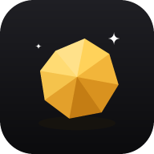

Configuração
Os vídeos vão como issues para um repositório privado seu no GitHub. O token fica só neste celular.
Vídeo recebido
Ainda não enviados
Ficaram neste celular porque a internet ou o GitHub falhou.

Os vídeos vão como issues para um repositório privado seu no GitHub. O token fica só neste celular.
Ficaram neste celular porque a internet ou o GitHub falhou.